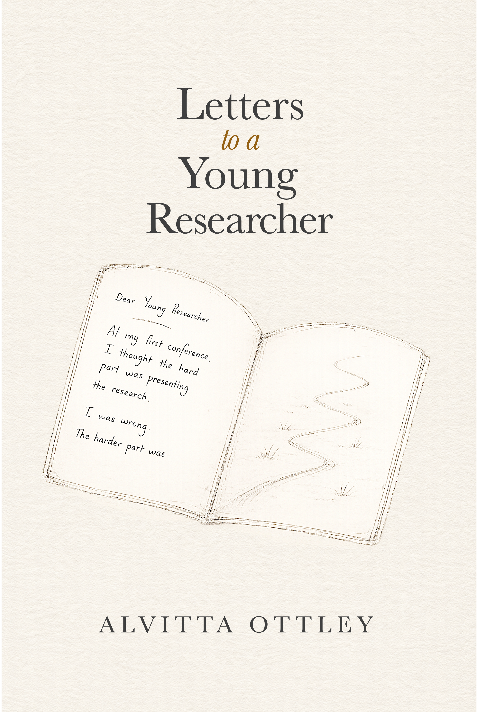
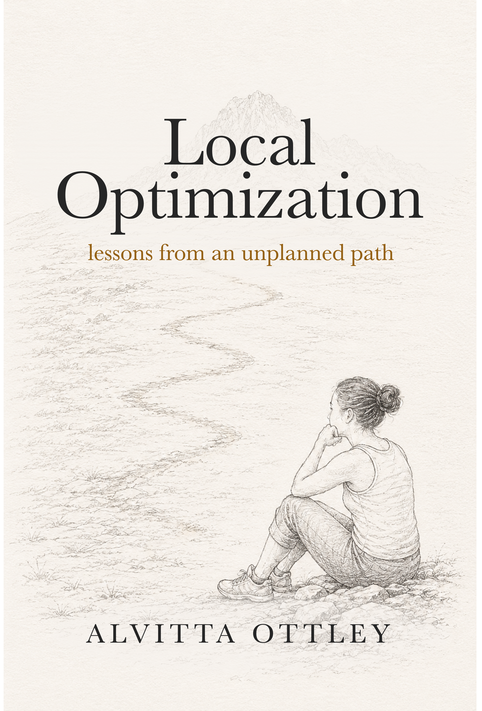
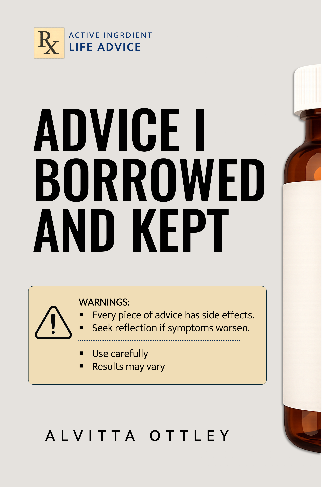

Letters to a Young Researcher
A reflective guide for students, scholars, and anyone learning how to find their voice in research.
Island Scholar Press publishes reflective nonfiction for readers navigating research, ambition, uncertainty, mentorship, and the long work of building a meaningful intellectual life.
Thoughtful, compact books for scholars, seekers, and lifelong learners.

A reflective guide for students, scholars, and anyone learning how to find their voice in research.

A one-hour memoir about succeeding without long-term planning.

Common, rare, and severe side effects of life advice
An independent imprint shaped by island roots, scholarly life, and the belief that useful ideas often arrive through story.
Island Scholar Press was founded by Alvitta Ottley to publish reflective nonfiction at the intersection of scholarship, lived experience, mentorship, and public-facing intellectual life.
Its books are written for readers who are building lives and careers without perfect maps.
Ordering and bibliographic information will be added as new Island Scholar Press editions become available.
For rights, permissions, library inquiries, speaking invitations, or press questions.